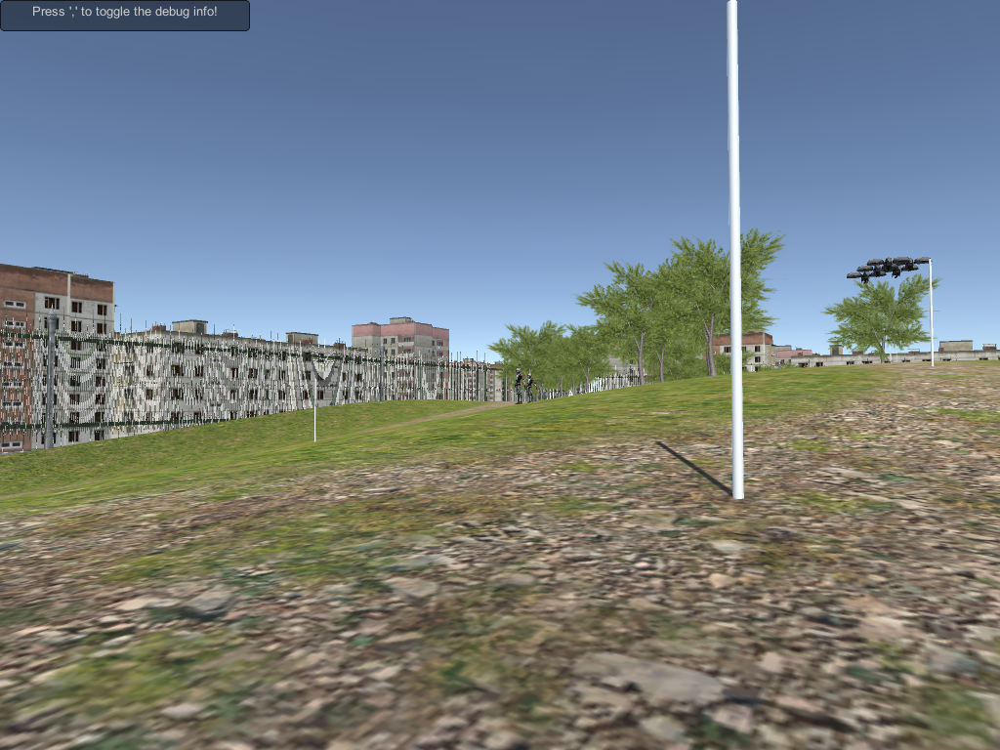

This was my final project for a class in the fall of 2016. I was required to make a scene, with various autonomous agents within it, such as: agents with a flocking behavior (the drones), agents with a pathfinding behavior (the drones and the lead robot), and agents with a leader-following behavior (the following robots).
The scene is approximately what a park might look like in the not-so-distant future, that lovely area where things look pretty much the same as now, but just a tad bit more futuristic.
The scene was made in Unity. The assets aren't my own, only the code is. There is a document crediting the asset creators in the downloadable zip file.
